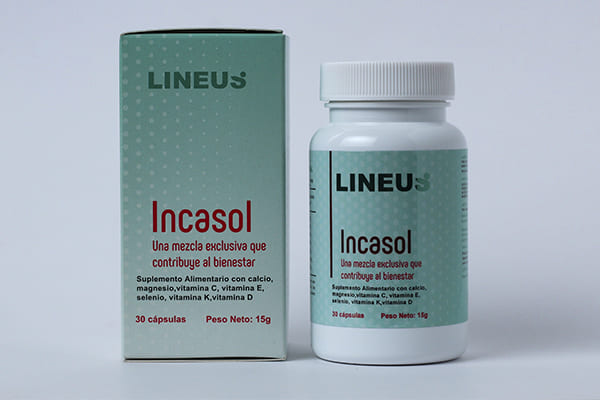

Meryl Streep поборола гипертонию: “Искусственные красные кровяные тельца мгновенно уменьшили давление, поддерживают кровеносные сосуды и укрепляют иммунную систему за 7 недель!”
История Meryl Streep (74 года) может быть историей многих других людей в нашей стране. Достаточно сказать, что с каждым годом все больше людей имеют проблемы из-за гипертонии. Причины могут быть разными: возраст, проблемы со здоровьем, наследственность, образ жизни, стресс, вредные привычки. Так было с Meryl Streep, которая согласилась поделиться с нами своей историей.
“У меня постоянно кружилась голова”
Журналист: Meryl Streep, добрый день! Как вы узнали о своем диагнозе? В нашу редакцию ежедневно поступают письма от людей, которые столкнулись с такой же болезнью.
Meryl Streep: Я хорошо помню свой первый визит к специалисту. Это было более 10 лет назад. Я чувствовала себя очень напряженной и беспокоилась о своем здоровье. Внезапно у меня начались приступы головокружения и головной боли. Оказалось, что это потому, что мое кровяное давление повышалось.
Meryl Streep:
Меня направили на обследование, и приговор был разочаровывающим: гипертония, 1 класс.Специалисты заверили меня, что почти все сталкиваются с такой ситуацией, когда
становятся старше. Из-за гипертонии я не могла работать и быть со своей семьей, как раньше. Я боялась, что очередной приступ застанет меня врасплох.
Мне нужно было постоянно контролировать давление и соблюдать диету, я отказалась практически от всех любимых продуктов, потому что они могли стать для меня
смертельными. Моя жизнь превратилась в существование, постоянно отекали ноги из-за закупорки сосудов, у меня болела голова практически весь день, волосы начали
выпадать из-за постоянного стресса. Мой организм был измучен.

Мне прописали таблетки для стабилизации кровяного давления. Врача сказали, что нормально иметь высокое кровяное давление после 50 лет, и в нашей стране многие страдают от этого. Но самое ужасное - это то, что смертность от гипертонии колоссальная!
Справка от редакции: Если говорить о конкретных значениях, то гипертония является причиной примерно 77-78% "естественных" смертей. В абсолютном выражении, это около почти 650 000 смертей в 2022 году. Почти бессимптомное заболевание с каждым годом поражает все больше людей и вряд ли исчезнет.
“Из-за назначенного лечения ситуация только ухудшилась”
Журналист: Вам назначили медикаментозное лечение. Как вы себя чувствовали?
Meryl Streep:
Несмотря на мои ожидания, с каждым днем мне становились хуже. У меня почти постоянно болела голова. Единственное, о чем я могла подумать, это о том, как перестать
страдать. Я потратила огромное количество денег, слушая рекомендации врачей, и не могла понять, почему симптомы проходят только на несколько часов, а затем
возвращаются с большей интенсивностью. Я долго не могла заснуть, мой сон был беспокойным. Я стала замечать, что портится слух, появляется одышка даже в состоянии
покоя.
И только потом я узнала…
“Вам продают НАРКОТИКИ”
Журналист: Так вы имеете в виду, что все современные лекарства от гипертонии не эффективны?
Meryl Streep:
Препаратанты от артериального давления, которые официально назначаются людям, выполняют важную функцию: они переводят деньги из карманов пациентов в карманы
медицинских олигархов.
Это легальные наркотики. Судите сами. Пациент принимает таблетку, его состояние улучшается. Эффект препарата прекращается, и давление снова повышается. Вот как
работают все наркотики. Чтобы чувствовать себя хорошо, вы должны искать новую "дозу".
Главное, что нужно понять, это следующее: в чрезвычайных ситуациях необходимы и важны "химические" лекарства. Они спасают жизни, когда нужна срочная помощь.
Например, во время Первой мировой войны героин использовался на поле боя, чтобы предотвратить смерть раненых от суматохи боли.
Но если вы постоянно принимаете таблетки, они разрушают организм. Не так быстро как наркотики, но принцип действия тот же. И, чтобы избавиться от побочных эффектов,
они продают вам больше таблеток. И многое другое. Чем больше, тем лучше для аптек и фармацевтического бизнеса.
“Люди умирают не от гипертонии, а от изношенного сердца и кровеносных сосудов”
Meryl Streep: Что делают таблетки? Они временно блокируют спазмы сосудов, из-за чего давление стабилизируется на 2-4 часа. А что дальше? Ведь причина высокого давления - грязные кровеносные сосуды, в которых годами скапливались кристаллы кальция, холестерол, сгустки крови. Это может вызвать страшные последствия, вплоть до остановки сердца. Химия не лечит сердце или кровеносные сосуды, она убивает!

Журналист: Но люди годами живут на лекарствах!
Meryl Streep: Наркоманы могут жить долго. Но что это за жизнь? Когда болят суставы. Когда мужчины, которые еще молоды, чуть старше 50 лет, заражаются простатитом и теряют потенцию. Когда почки выходят из строя и отек начинает терзать. Сначала ноги опухают, поэтому ходьба может быть затруднен. Затем внутренние органы. Что желудок превращается в форму бочки.
Некоторые таблетки, как правило, онкогенны при длительном использовании. Посмотрите на статистику рака: вот настоящая эпидемия.
Я не говорю о таких мелочах, как проблемы со сном, шум в ушах, потеря зрения и слуха. Список может быть длинным. И причина только одна: изношенные грязные сосуды, которые никто не лечит. Хотя препарат уже существует и показывает отличные результаты. НО Я УЗНАЛА О НЕМ ПРОСТО СЛУЧАЙНО ОТ ЗНАКОМОГО ВРАЧА, КОТОРЫЙ УСТАЛ МИРИТЬСЯ С КОРРУПЦИЕЙ В СФЕРЕ ЗДРАВООХРАНЕНИЯ.
Журналист: Перед интервью вы уже упоминали об инновационном продукте для сердца и кровеносных сосудов. Что это такое? Почему представители аптек реагируют на ваше имя, как вампиры на солнечный свет?
Meryl Streep: Я говорю о Incasol. Это уникальный продукт, основанный на молекулах жизни из живых растений.
Incasol - это разработка Чилийского центра молекулярной биологии совместно со специалистами из Швейцарии. Препарат также обычно называют "искусственными эритроцитами", потому что продукт стимулирует выработку молодых эритроцитов, которые участвуют в "очищениях и восстановлении" кровеносных сосудов. Кто бы мог подумать, что его основным ингредиентом является перуанская мака? Оказывается, мака - почти самый сильный враг гипертонии.
Журналист: Впервые слышу о Incasol. Расскажите подробней!
Meryl Streep: Я узнала о продукте от чилийского кардиолога, который помог моей подруге. Этот человек спас ее несколько лет назад, а сейчас он спас меня!
Incasol уже много лет очищает кровеносные сосуды и стабилизирует кровяное давление жителей Чили. Не обязательно принимать его постоянно. Всего через 7 недель он полностью восстановит сосудистую сеть, и давление будет от 120 до 80 в течение следующих 5 лет.
Чилийская команда ученых получила международную награду в области терапевтической биологии за разработку этого продукта. Для инновационного прогресса в лечении гипертонии и сосудистых патологий.
Я просто восхищена народом Чили. Это невероятная страна со своей уникальной культурой, традициями, невероятными профессионалами. Каждая поездка сюда - настоящий отдых для меня. Я наполняюсь энергией, восхищаюсь чилийцами, чувствую невероятное умиротворение. Неудивительно, что именно здесь живут лучшие специалисты в мире, которые хотят спасти миллионы.
Казалось бы, после такого признания аптеки должны стоять в очереди за правом на продажу Incasol. Государство должно принять эту подготовку. Но нет. Абсолютная и погребальная тишина. Кажется, никто не заметил прогресса.
И представители медицинского бизнеса абсолютно ненавидят этот продукт. У них есть сотни лекарств, они планируют продавать и зарабатывать. И эти планы не могут быть выполнены только с Incasol. Люди забывают пойти в аптеку после 7 недель лечения.
Отсюда ненависть к Incasol. Поэтому вы никогда не слышали о нем. Его невозможно очернить. Тем не менее, есть международное признание, сертификаты, научные статьи, тысячи довольных пациентов. Поэтому была выбрана стратегия игнорирования. Но я не буду молчать!

“Эффект превзошел мои ожидания. Искусственные эритроциты избавили меня от страшной проблемы, которая мешала мне жить годы”
Журналист: Как быстро вы почувствовали, что вам стало лучше, после применения?
Meryl Streep: Через неделю после начала курса я почувствовал себя намного лучше. Я постоянно измерял свое кровяное давление, и на седьмой день мое кровяное давление было 150/90 вместо обычного 160/100.
И я знаю, почему так произошло!!
Главной целью Incasol является восстановление кровеносных сосудов. Это основа, на которой покоится ваше здоровье.
Incasol восстанавливает кровеносные сосуды в 3 фазы:
- Он разлагает холестериновые бляшки
- "Ремонтирует" повреждение стенок кровеносных сосудов.
- Улучшает проводимость нервных импульсов мозга.
Восстановление кровотока и укрепление стенок сосудов инициирует цепную реакцию обновления тела. Скрытые иммунные силы активируются, и организм начинает исцеляться.
- мой сон стал крепким, я счастлива просыпаться с отличным самочувствием и без головной боли
- мне отменили практически все препараты, которые отравляли организм и разрушали меня изнутри
- и, самое главное, после начала применения Incasol я ни разу не чувствовала головокружение, не было головных болей или пульсации в висках
Я НИКОГДА НЕ ЧУВСТВОВАЛА СЕБЯ ТАКОЙ ЗДОРОВОЙ И МОЛОДОЙ!
Этот процесс самовосстановления называется самогенерацией. Эти механизмы даются природой, и Incasol является катализатором, ключом, который вызывает саморегенерацию.
Слева - ЭКГ до приема Incasol: явные признаки гипертонии.
Справа - ЭКГ после приема Incasol: признаков гипертонии нет.
Избавьтесь от 7 заболеваний за 7 недель!
Журналист: Что получает человек после цикла терапии Incasol?"
Meryl Streep: О, человек получает много после лечения Incasol! Посмотрите сами:
- Давление, как у астронавта. Прежде всего, это полное облегчение гипертонии. После 7 недель регулярного использования Incasol сосудистая сеть организма полностью восстанавливается. Кровеносные сосуды становятся эластичными и твердыми. Другими словами, кровеносные сосуды оживают и без проблем «затухают» колебания артериального давления. Будь то из-за нервов или физических нагрузок, восстановленные кровеносные сосуды компенсируют любое падение и поддерживают стабильное давление от 120 до 80.
-
Улучшение функции мозга.
После использования Incasol мозговое кровообращение улучшается на 73%.
Пациенты рады сообщить, что:
- ➥ Память улучшается.
- ➥ Сон нормализуется, слабость и слабость исчезают.
- ➥ Звон в ушах прекращается.
- ➥ Головные боли уходят.
-
Улучшение остроты зрения, восстановление роговицы.
Incasol очищает не только большие сосуды и артерии, но и более мелкие капилляры. Их особенно много в глазах. Это приводит к обновлению клеток сетчатки и улучшению
тонуса глазных мышц.
- ➥ Острота зрения улучшается с 0,5 до 2,1 единиц.
- ➥ Глазное давление нормализуется.
- ➥ Уменьшает симптомы катаракты.
-
Припухлость исчезнет.
Восстановите правильное функционирование почек и метаболизм жидкостей в организме. Почки перестают удерживать воду, и нет необходимости принимать мочегонные средства.- ➥ Ноги перестают болеть и опухать.
- ➥ Живот сжимается по мере уменьшения воспаления органов.
- ➥ Жидкость выходит из легких, дыхание становится легче.
-
Геморрой и простатит вас не побеспокоят.
Наиболее заметные заболевания, вызванные кровеносными сосудами:- ➥ Варикозное расширение вен.
- ➥ Геморрой.
- ➥ Простатит.
- ➥ Импотенция.
-
Обновление сердца.
Очищение аорты благотворно влияет на тонус сердечной мышцы. В 93% случаев тахикардия исчезает, в 99% ишемия излечится.
- ➥ Частота сердечных сокращений и пульс нормализуются.
- ➥ Душевная боль исчезает.
- ➥ В 17 раз ниже риск сердечного приступа.
- Иммунитет начинает работать.
Это улучшает кровоснабжение костного мозга, который участвует в формировании иммунных клеток. Это приводит к увеличению защитных тел организма. Иммунитет защищает не только от вирусов, таких как нынешний Covid-19. Основная функция сильной иммунной системы заключается в защите от раковых клеток. Сильная иммунная система вовремя распознает и разрушает раковые клетки. Это не вызывает образования полной опухоли.
Иммунная система, которая работает не менее чем на 50%, уже является непреодолимым барьером для вирусов. И это также очень важно сегодня.
Мнение ведущего чилийского кардиолога ИМЯ ФАМИЛИЯ
Имя Фамилия, Главный врач отделения критических пациентов клиники INDISA, заслуженный кардиолог Чили, вице-президент чилийской ассоциации кардиологов
“Люди, страдающие от высокого кровяного давления, обычно обращают внимание на то, как это усложняет их жизнь. И опасные последствия высокого кровяного давления полностью упускаются из виду. Нарушения эластичности сосудов приводят к прерыванию кровоснабжения тканей и органов. В результате появляется ряд патологий, от диабета до инсульта.
Как только Incasol появился на нашем рынке, я начал сразу же рекомендовать его своим клиентам в качестве здоровой альтернативы химическим средствам (и, при необходимости, в качестве дополнения к ним). Травяные ингредиенты естественным образом помогают организму избавиться от причин высокого кровяного давления.
Это самое большое преимущество Incasol. Лучшим показателем эффективности капсул является то, что многие из моих клиентов снова приходят на прием и благодарят меня за то, что я избавил их от недуга, который мучил их в течение многих лет”.
На данный момент вы можете заказать Incasol только через официальную форму заказа. Для вашего удобства мы предоставляем вам ссылку, по которой вы можете найти дополнительную информацию о продукте.
Adivina qué puerta tiene un 50% de descuento
¡Felicidades!
Incasol $34.990
Todo lo que tienes que hacer es ingresar tu nombre y número de teléfono.
¡Apresúrate! Te queda:
09:30
Comentarios
DESCUBRIMEINTO: 10 años de sufrimiento de la hipertensión arterial. No creerá lo que la ayudó
Añadir comentario
Me pregunto si me ayudaría a mí también. ¿Alguien lo ha usado?
Sí, he tomado el curso. La presión arterial se ha estabilizado realmente. Tómelo, no se arrepentirá.
Tengo un dolor de cabeza constante desde hace 5 años. Al principio, los niños incluso temían que tuviera un tumor cerebral. ¡Resultó ser la presión arterial alta! Después de 3 semanas de tomar Incasol, mi dolor de cabeza cesó por primera vez en años. ¡Estoy tan feliz!
Tuve decenas de consultas con reputados especialistas y nadie pudo ayudarme. Me dijeron que tenía que aceptarlo y aprender a vivir con ello. ¡Ojalá tuvieran la vida así! Me enteré de la existencia de Incasol por una revista y lo compré. En una semana, dejé de marearme y empecé a dormirme bien. En 4 semanas, la presión arterial era de 130/70. ¡Y ya no se levanta! ¡No pueden imaginarse lo feliz que estoy!
Buscaba un remedio para mi madre, no era apta para los betabloqueantes que se recetan a todo el mundo. Compré Incasol por recomendación de un especialista. Noté la mejora después de unas dos semanas. Han pasado seis meses y el efecto se mantiene. La presión arterial casi nunca se eleva.
Mi abuela también usó Incasol y le ayudó mucho, ahora puedo dejarla con seguridad cuando me voy de viaje de negocios. ¡Qué bueno cuando los seres queridos están sanos!
He aprendido a vivir con la presión arterial alta. Lo principal es evitar las situaciones de estrés y no esforzarse demasiado. Por supuesto, es difícil evitar todas las situaciones... Si estas cápsulas realmente ayudan, tendré que probarlas. Voy a pedirlas.
Acudí a una clínica privada y me hicieron un curso allí, pero fue en vano. No puedo dormir en absoluto, las pastillas no siempre ayudan. Mi última esperanza son estas cápsulas. Ya he comprado Incasol, espero que funcione.
Compró Incasol después de un incidente. Mi madre tenía la presión arterial alta, tomó una pastilla y... ¡se desmayó! Como resultó después, es muy peligroso bajar la presión, incluso se puede entrar en coma. El especialista nos lo explicó cuando la rescató. Creo que Incasol es mejor, porque no baja demasiado la presión.
Me gusta la composición, nada innecesario, todo natural. No funciona de inmediato, sino gradualmente. Como funciona todo lo natural. Una amiga me aconsejó que lo tomara, y me advirtió que ya en la segunda semana vería el efecto de Incasol. Y así fue. ¡Me siento mejor y tengo más energía!
¿Dónde puedo pedir este producto?
El formulario de pedido está debajo del artículo, échele un vistazo de nuevo.
Llevo 3 semanas tomando Incasol y estoy absolutamente impresionado. ¡Puedo hacer deporte sin miedo a la presión arterial alta!
Por cierto, el precio es muy razonable. No podría comprar un producto caro.
Para mí, personalmente, el precio no es lo principal, lo que me importa es que el producto realmente funcione. Un colega del trabajo lo compró y lo elogió. ¡Qué bien que encontré este artículo en Internet!